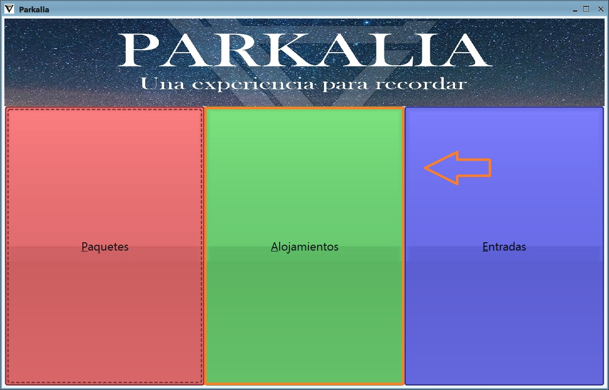

Para hacer una reserva de alojamiento se seguirian estos pasos:
1- Se arranca la aplicacion y se selecciona el segundo boton: "Alojamientos".
2- A continuacion podemos ver la lista de alojamientos que hay disponibles en el panel central. A la izquierda tenemos varias opciones para filtrar de forma individual: por nombre, por parque, por precio maximo por noche, por tipo de alojamiento o por categoria (numero de estrellas). Una vez escogido el alojamiento que deseamos reservar, hacemos click en el boton ver. Se nos desplegará un nuevo panel.
3- Aqui podemos ver toda la informacion del alojamiento y del parque al que esta vinculado. Para realizar la reserva es necesario rellenar todos los campos de forma correcta: una fecha de inicio, el numero de noches (por defecto una), el numero de personas (por defecto una) y, en caso de ser un hotel, si queremos que tenga o no desayuno. Segun vamos modificando los datos se va a ir actualizando el precio total. Una vez rellenados todos los datos hacemos click en el boton "Añadir al carrito" y ya habremos reservado un alojamiento. Se puede ver que el alojamiento se ha añadido a nuestro carrito porque aparecera en el panel de la derecha. Para realizar mas reservas sobre alojamientos se haria click en el boton "Atras".